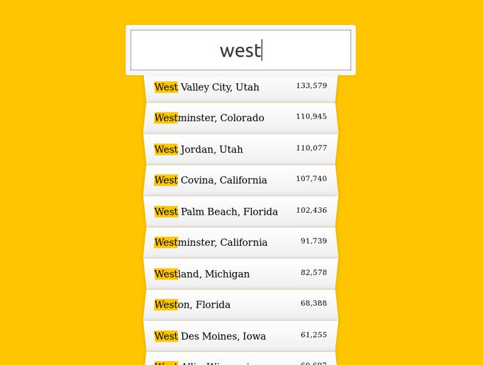
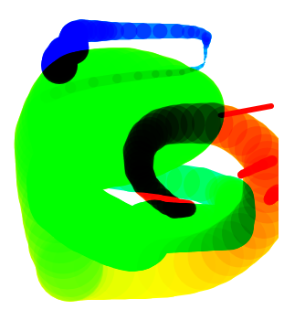
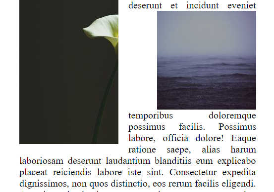
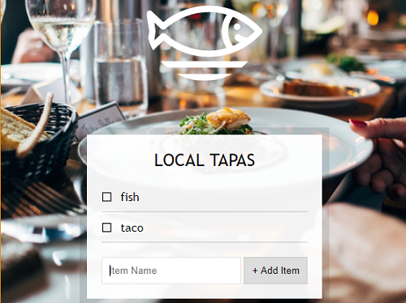
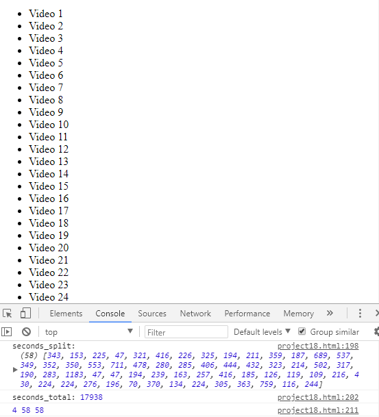
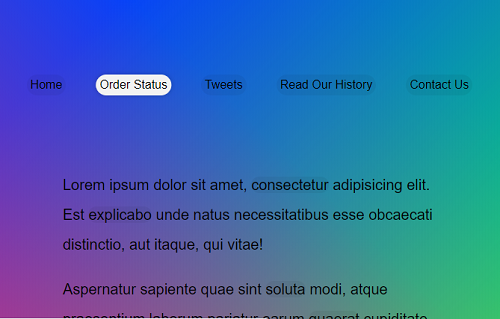
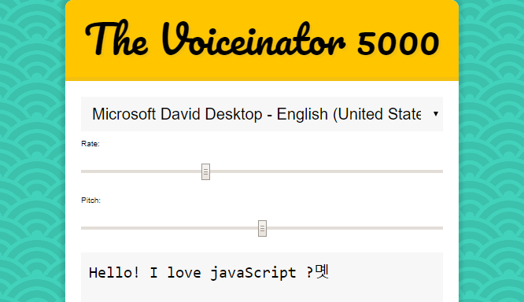
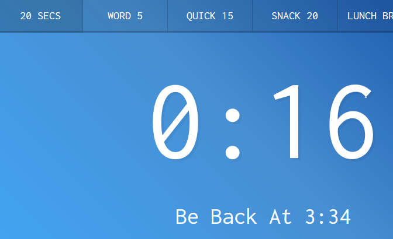

- stopwatch

- clock (Wes Bos's Javascript30_youtube)
.png)
- js project 1/30 Drumkit

- js project 3/30 Variables

- js project 04 Array
- js project 5/30 Image Gallery

- js project 6/30 Ajax Type Ahead

- js project 7/30 Array Cardio
- js project 8/30 HTML5 Canvas

- js project 9/30 Console Tricks!

- js project 10/30 Hold Shift to Check Multiple Checkboxes

- js project 11/30 HTML5 Video

- js project 12/30 KONAMI Code

- js project 13/30 Slide in on scroll

- js project 14/30 Ref vs Copy
- js project 15/30 Event Delegation

- js project 16/30 Mouse Move Effect

- js project 17/30 Sort without Article

- js project 18/30 Array Reduce

- js project 19/30 HTML% Canvas(chrome)

- js project 20/30 Speech Recognition(chrome)

- js project 21/30 Geolocation Speedometer and compas(chrome, not completed)

- js project 22/30 Follow Along Links

- js project 23/30 Text-To-Speech(chrome)

- js project 24/30 Sticky Nav

- js project 25/30 Event capture, Bubbling

- js project 26/30 Dropdown Nav

- js project 27/30 Click an Drag

- js project 28/30 Video Play Speed Control

- js project 29/30 Countdown Timer

- js project 30/30 Whack A Mole Game

- clock
- clock-1
- clock-1(test)
- clock-2
- timer
- Clock and Timer